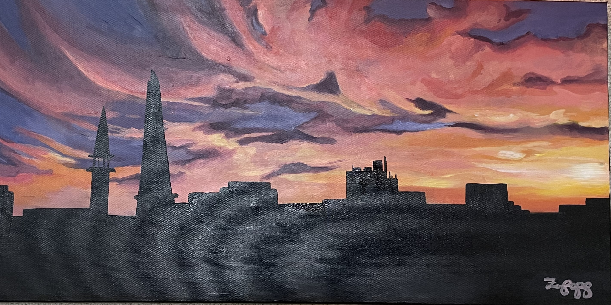

Traditional

This is a work that I did on my own, as part of a series of womens’ faces alongside creatures, this one depicting a woman smiling with a few bugs around her; I call her “Bug Lady.” I was working on expressing emotion, because I usually paint straight faces, so I tried to convey how happy she was about her bug friends. The work was completed in August of 2022, is acrylic paint on canvas, and measures 16"x12”.
2022

2017

2021

2021

2019

2014
2023
2020
2022
2023

2014 and 2021

2021 and 2020